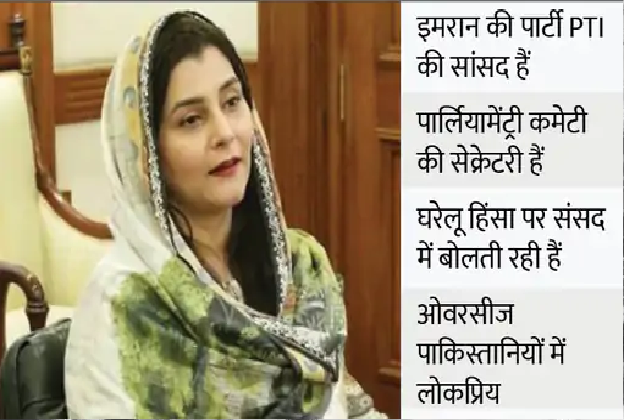
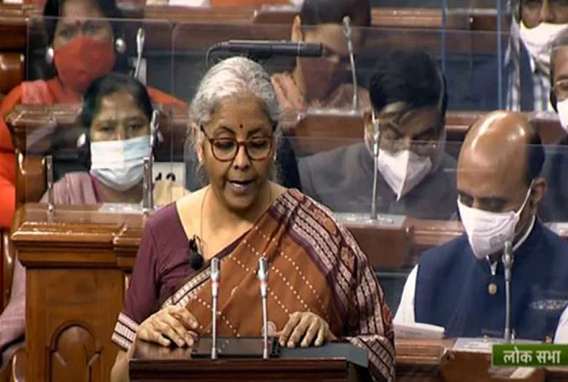

CURRENT-AFFAIRS FEB 3, 2022
1. Big disclosure on Galvan: 38 soldiers of China were washed away in the river during the clash, but he accepted the death of only 4

In June 2020, 38 Chinese soldiers were killed in a violent clash between Indian and Chinese soldiers in Galvan Valley of Eastern Ladakh. This has been revealed from the investigative report published in the Australian newspaper The Klaxon. This number is 9 times more than the number reported by China. This report has been prepared after one and a half years of research.
The Australian newspaper had prepared a team of independent social media researchers to investigate the whole matter. Which released a report titled 'Galwan Decoded'. The Anthony Klan-led special report states that several soldiers of the People's Liberation Army (PLA) of China were washed away in the Galwan River that night. This research report has destroyed all the propaganda of the dragon.
China manipulated the facts
According to the report, China had mixed two different incidents to manipulate the facts of this clash. China has never given the number of soldiers killed in Galvan, but last year it announced medals for four soldiers killed in the clash. Researchers said that on the night of June 15-16, many PLA soldiers drowned in the Galwan river flowing in zero degree temperature.
Media reports have claimed on the basis of blogs of several users of Chinese social media platform Weibo that 38 Chinese soldiers were washed away in the river that night. Later, the Chinese authorities removed all these social media posts. Junior Sergeant Wang Zhuoran was also among these 38 people, to whom China has announced a medal.
2. Bezos's yacht will get a way: The historic bridge of the Netherlands will be temporarily broken so that the super yacht can pass, the bridge was built in 1878
The historic Koninghaven Bridge in the Netherlands will be demolished to give way to the world's giant e-commerce company Amazon founder Jeff Bezos' superyacht. Located in the city of Rotterdam, this bridge was built in 1878. It was destroyed by bombing by the Nazis during the Second World War, after which it was rebuilt. However, the bridge will be demolished only temporarily.
Bezos's 40 meter high yacht worth Rs 3 thousand 630 crore will not be able to pass under the bridge. Because of this the middle section of the steel-girdered bridge will be removed. The mayor of Rotterdam told - this is the only way to the sea and whatever cost it will cost to remove this bridge, Bezos will also pay for it. However, many people are also opposing the demolition of this bridge.
The bridge was part of the Second World War
Because of this bridge being a part of the Second World War, people have an emotional connection with it. The construction done on this bridge in 2017 had created a lot of anger among the people, when the municipal corporation had promised that it would not allow any damage to the bridge again.
According to Dutch media, the municipal corporation has said that the construction that will be done to give way to Bezos's boat will not only benefit financially but will also create new jobs. After the yacht passes, the bridge will be made back as before.
3. Ukraine dispute escalates: 3 thousand US troops will be stationed in Poland-Germany to increase pressure on Russia, Biden approved
US President Joe Biden made an important decision on the Ukraine dispute on Tuesday. After an emergency meeting with Pentagon officials at the White House, Biden ordered 2,000 American troops to be deployed to Germany and Poland. According to reports, American soldiers will leave for these countries very soon. Biden's decision becomes important because talks between the US and Russia on the Ukraine issue have stalled. On the other hand, Russia is besieging Ukraine from three sides. The US and NATO fear that Russian troops may attack Ukraine from the border with Belarus. About 13,000 Russian soldiers are stationed here. Meanwhile, Britain and Canada have also approved the sending of their troops to Ukraine.
4. Woman MP in PAK is also not safe: Imran's MP Javeria's allegation - husband wanted to kill by shooting, saved his life by bowing down; case registered
Women MPs in Pakistan are also victims of domestic violence. The latest example of this is Prime Minister Imran Khan's party MP Javeria Zafar. On Tuesday evening, panicked MP Javeria reached the Mahila Police Station. Here she lodged an FIR accusing her husband Haider Ali of attempt to murder.
In the FIR, Javeria said – I had an argument with my husband over some issue. They have been threatening me with divorce for many days. When I resisted his threat, he opened fire with a pistol on my head. I bent down at the last minute and the bullet hit the wall. After the incident, the husband of the MP is said to be absconding.
Marriage took place 6 months ago
According to a report in 'Geo News', Javeria and Haider Ali got married 6 months ago. From the very beginning of the marriage, there was no good relationship between the two. There have been reports about this in the past as well. On Tuesday, Javeria reached the Women Police Station in Islamabad in a disturbed and nervous condition. This police station is just a short distance from the Parliament. Here she filed a case of murderous assault against her husband Haider Ali.
Javeria told the police- My husband is of violent nature. On Tuesday, there was a rift between me and my husband over some issue. Meanwhile, Haider pointed a pistol at my head. As soon as he fired, I bowed down. The bullet hit the wall. They have also threatened to kill my family members. I am in danger from my husband.
5. Omicron's sub-variant reached 57 countries: WHO said - more than 50% of the cases in many countries; Omicron infected 9 crore people in 10 weeks
The World Health Organization (WHO) gave important information about Omicron's sub-variant BA.2 in its weekly meeting held on Tuesday. According to WHO, BA.2 has reached 57 countries so far. Its infection rate is much higher than other sub-variants of Omicron. After genome sequencing of Kovid positive samples taken in these countries last month, Omicron has been confirmed in more than 93% of the samples.
The presence of BA.1 and BA.1.1 variants is 96% in all Omicron samples. These also include the sub-variants BA.1, BA.1.1, BA.2 and BA.3. However, there has been an increase in the cases related to BA.2. In many countries, more than 50% of people are getting infected with this variant.
6. Saudi Arabia is going to change the country's flag and national anthem, this is the reason
RIYADH: Saudi Arabia is going to change its national flag and national anthem. State media reports that the non-elected advisory Shura Council voted on Monday in favor of minor changes to the national anthem, flag and emblem. However, the decisions of the Council have no bearing on the existing laws or structures. But, its decision is considered important because its members are appointed by the King of Saudi Arabia.
Action will be taken on violation
According to the news published in our partner website WION, the purpose of the proposed change is to increase the level of awareness and knowledge about the importance of the national flag, state emblem and national anthem as well as provide them more security. Apart from this, provision has also been made in the changes to take action against the insult or violation of the rules related to the national flag, state emblem and national anthem.
Bangladeshis accused of insult
The proposed changes are said to be in line with the vision of the country's young Crown Prince Mohammed bin Salman Al Saud, which emphasizes Saudi nationality and national pride. The Shura Council has taken this step at a time when four Bangladeshi nationals have been arrested in Saudi for insulting the national flag. The accused had thrown the flag in the dustbin.
Saudi Arabia is changing
Since 1973, the national flag of Saudi Arabia has been green, with a white sword on it and in Arabic it is written, 'There is no god but Allah; Muhammad is the Messenger of Allah. Let us inform that under the leadership of Crown Prince Mohammed bin Salman of Saudi Arabia, changes and reforms are being made in many areas in the country. Following the path of the United Arab Emirates, Saudi Arabia has started giving rights to women. Last month, Saudi women took part in the beauty pageant 'Ships of the Desert' with their camels for the first time.
7. Ukrainian ready to do 2-2 hands with Russia, will adopt the strategy of guerrilla war
Kiev: In the event of Russian invasion of Ukraine, the people there are planning to defend the country and wage a guerilla war. The city of Kharkiv is only 40 kilometers away from the Ukrainian border where thousands of Russian troops are gathered. This is Ukraine's second largest city and industrial center, the situation here remains very tense.
ready to compete with russia
The opinion of the people of Kharkiv city is divided. Some are in favor of Ukraine, some are in favor of Russia. Some of them are talking about fighting firmly with Russia, while some are talking about spending their lives in peace. Some people in this city, with a population of more than one million, say that if Russia invades, they will wage a guerilla war against Russian soldiers, sacrificing the lives of ordinary citizens. He believes that many citizens of the country will do the same.
Don't be afraid, need to do something
Victoria Balesina, a coach who teaches table tennis to teenagers, says that this city must be protected. We need to do something, not be afraid and kneel. Experts and US intelligence officials say dentists, coaches, house wives waging a guerrilla war in a city with thousands of underground shelters could prove to be a bad experience for Russian military planners.
Russian soldiers are stationed on the border of Ukraine
Let us tell you that Russia has deployed 1 lakh 30 thousand soldiers on the border of Ukraine. Russia has also started exercises on the border with Belarus. There are already 5 thousand Russian commandos on the Belarus-Ukraine border.
8. Now the land will also have 'Aadhaar' number, the government is going to start this scheme
New Delhi: The way India has a unique number ie Aadhaar card for citizens, the government is now preparing to issue a unique registered number of land also. This work will be done under the Central Government One Nation One Registration Program. In Budget 2022, Finance Minister Nirmala Sitharaman announced that land records would be kept digitally.
IP based technology will be used
According to the information, IP based technology will be used to keep records of the land digitally. With the help of land papers, their records will be kept digitally. The central government aims to digitize land records from across the country by 2023. A target has been set to digitize land records across the country by March 2023.
9. Budget 2022: Why is there no relief in income tax? Finance Minister explained the matter from the verse of Mahabharata
New Delhi: Finance Minister Nirmala Sitharaman presented the Union Budget 2022 in Parliament for the fourth consecutive time on Tuesday. The Finance Minister made many economic allocations in different sectors in the paperless budget presented for the second time in a row, but he did not change the tax slab and did not give any relief to the middle class.
Why was the tax slab not changed?
During the 90-minute budget speech, Finance Minister Nirmala Sitharaman explained why no change was made in the tax slabs and why relief was not given to the people. He gave the example of a verse from Mahabharata and said that the king should collect taxes without any laxity and according to religion.
Referring to the 11th verse of Shanti Adhyay 72 of Mahabharata
Nirmala Sitharaman referred to the 11th verse of Shanti Chapter 72 of the Mahabharata before announcing the direct tax. It says that the king should keep on making efforts for the welfare of the people, that is, for their welfare.
Collection of taxes without laxity
The Finance Minister said, 'Dapyitvakaramdharmyam Rashtranamnityathavidhi. Asheshankalpyedrajayogakshemanatandritah॥11' That is, 'the king must make arrangements for the Yogakshem (welfare) of the people by ruling according to the Raj Dharma, without making any laxity and collecting taxes according to religion.'
Major reforms will be done in income tax rules
On income tax rules, Nirmala Sitharaman said that major reforms will be done in income tax rules. He said that the taxpayer will get a chance to file the updated return. After the announcement made by the Finance Minister, now you will be able to update the IT Returns for 2 years by paying the fine. Many times the taxpayer makes a mistake, now the government will get a chance to update it. This is considered to be a good start for the taxpayers.